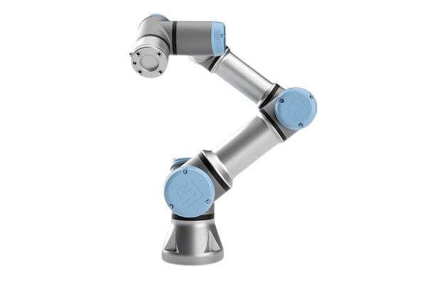

Robô Colaborativo (Cobot)

O robô colaborativo, também conhecido como cobot, foi desenvolvido para trabalhar de forma segura ao lado dos seres humanos. Diferentemente dos robôs industriais tradicionais, que normalmente operam em áreas isoladas por grades de proteção, os cobots possuem sensores inteligentes que detectam a presença de pessoas e reduzem ou interrompem seus movimentos quando necessário.
Princípio de Funcionamento
Os cobots utilizam motores elétricos, sensores de força, câmeras e sistemas inteligentes para executar movimentos precisos. Sua programação costuma ser simples e intuitiva, permitindo que operadores configurem novas tarefas rapidamente sem necessidade de conhecimentos avançados em programação.
Características Técnicas
- Trabalho seguro ao lado de pessoas.
- Possuem sensores de força e proximidade.
- Fácil programação.
- Alta precisão.
- Baixo consumo de energia.
- Grande flexibilidade para diferentes tarefas.
Aplicações Industriais
- Montagem de componentes.
- Inspeção de qualidade.
- Paletização.
- Embalagem.
- Alimentação de máquinas.
- Parafusamento.
Integração com Automação e IoT
Os robôs colaborativos podem ser integrados a sensores inteligentes, sistemas supervisórios, CLPs e plataformas de Internet das Coisas (IoT). Essa integração permite monitoramento remoto, coleta de dados em tempo real, manutenção preditiva e otimização dos processos produtivos.
Modelos Comerciais
| Fabricante | Modelo |
|---|---|
| Universal Robots | UR5e |
| Doosan Robotics | M0609 |
| Techman Robot | TM12 |
Imagens de Modelos Comerciais
UR5e
Universal Robots

M0609
Doosan Robotics

TM12
Techman Robot